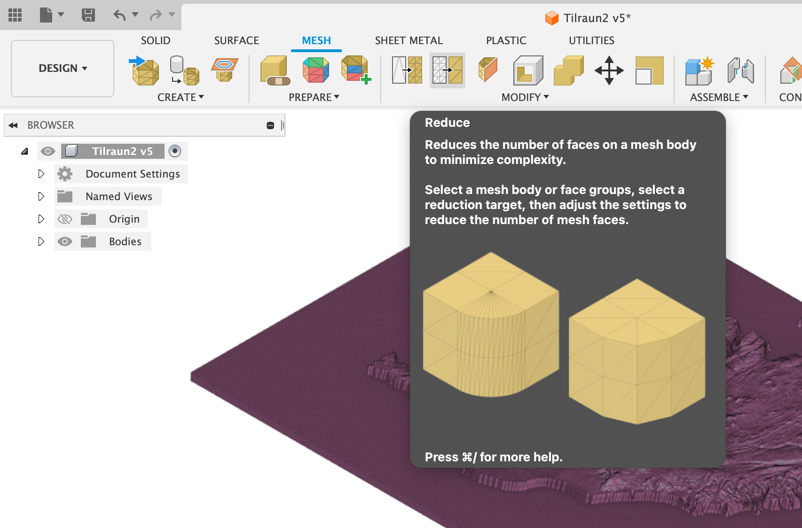
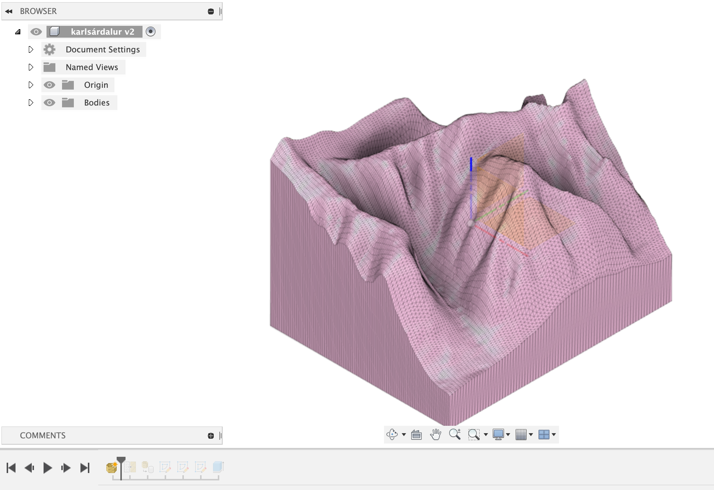
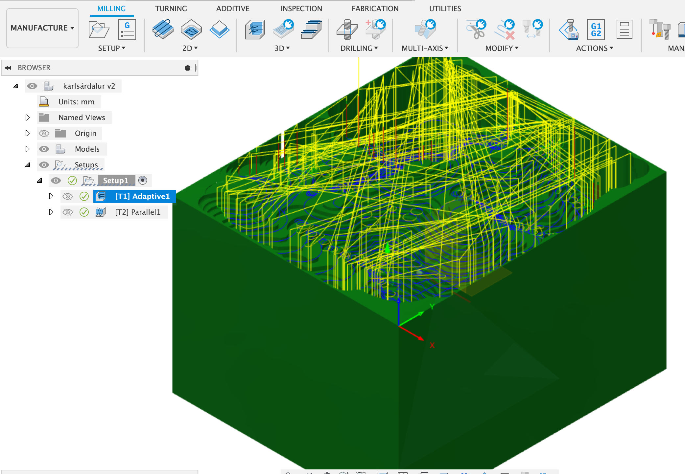
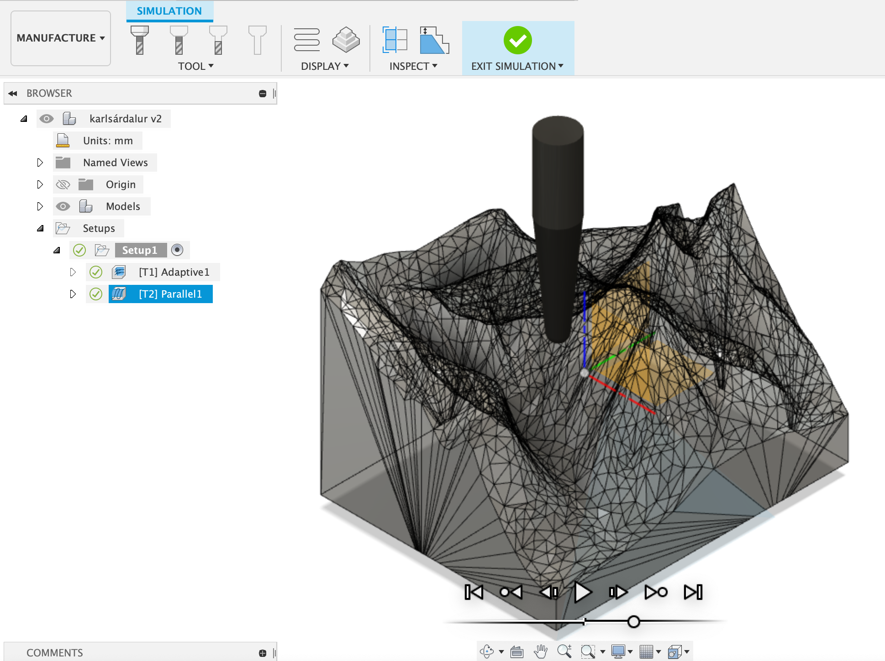
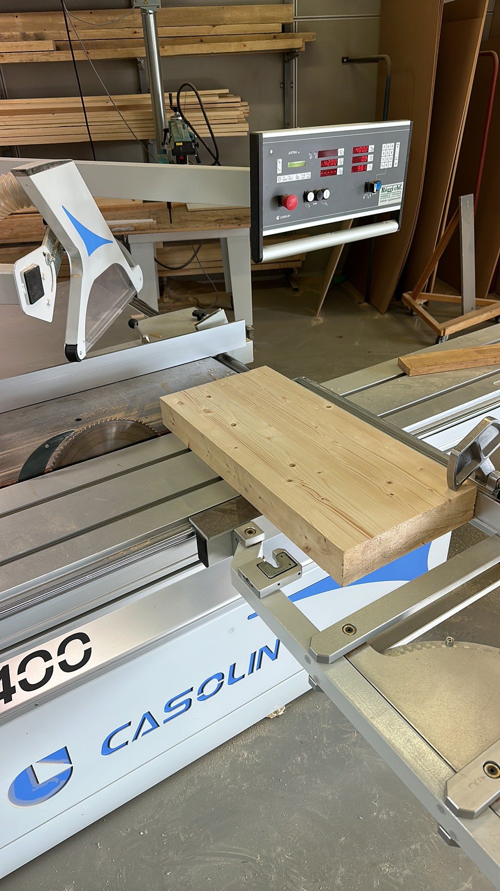
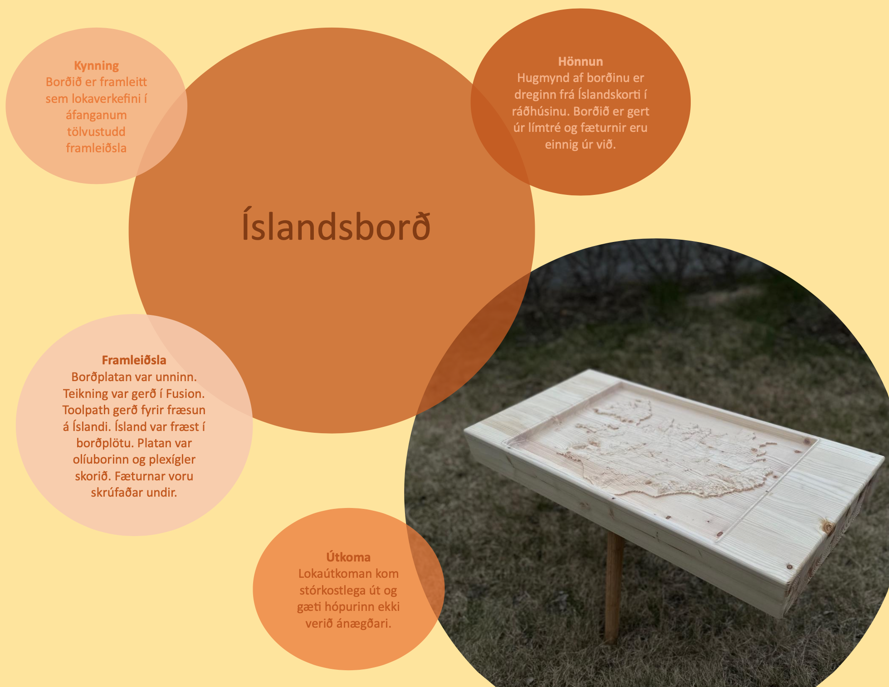

Project 4 - The Final Project
Sorry, this one is also in Icelandic...
Minn hluti af Lokaverkefninu "Íslandsborð"

Efnisyfirlit
Hér er hægt að sjá hvað ég gerði í réttri röð. Hægt er að fylgja köflunum eftir í röð eða fara aðeins í þann kafla sem þarf að sjá.
- Minnka mesh
- Byrjun á toolpath
- Meðhöndlun á borðplötum
- Fræsun
- Fætur undir borðið
- Einblöðungur
Minnka mesh
Þar sem við þurftum að finna leið til að setja upp .stl skránna af Íslandi þar sem hún var var mjög flókinn. Því var möskvinn af Íslandi fenginn frá Birki og hann tekinn og einfaldaður og fyllt inn í hann til þess að búa til body. Einföldunin af möskvanum er auðveld þar sem Fusion gerir það fyrir þig, en reikningurinn á bakvið það getur tekið sinn tíma. Meshið hjá okkur var einfaldað í 20%.
Byrjun á toolpath
Til þess að fá "Proof of concept" á toolpath reyndum við að gera toolpath með Íslandi en tölvan var ekki að ráða við það, eða við sáum ekki fram á endi. Því tók ég .stl skrá af einum af uppáhalds stöðunum mínum á Íslandi Karlsárdal.
"Toolpath Proof of Concept"
Tekinn .stl skrá af Karlsárdal/h4>

Búa til toolpath

Keyra simulation af toolpath

En Aron tók að sér að lokum toolpath fyrir Ísland sjálft. Sjá má hvernig hann gerði það hér:
Vefsíðan hans Arons
Meðhöndlun á borðplötum
Ég tók alveg að mér meðhöndlun á borðplötunum. Ég fékk búta af límtré gefins þar sem það átti að henda þeim. Ég fór með þær upp í tækniskóla þar sem ég þekki einn kennara hann Fjölni sem var tilbúinn að hjálpa mér að laga þær.
Forvinna á borðplötu
Slípun
Bútarnir voru báðir settir í slípun þar sem þeir vou gerðir jafn þykkir og fullkomlega sléttir á öllum hliðum. Límtréið var með einhverskonar lagi af olíu og því þurfti að taka slatta af hvorri hlið. Passað var að báðir bútar yrðu nákvæmlega jafn þykkir, það var til þess eiga alveg eins varabút ef einhvað færi úrskeiðis.


Sögun
Til þess að báðir bútarnir yrðu nákvæmlega eins þá þurfti að saga þá í stærð. Stærðin sem var ákveðin var 70 cm á lengd og 36 cm á breidd. Því var notuð mjög fullkomin borðsög sem fór auðvelt með límtréið, reyndar voru allar græjur í tækniskólanum mjög fullkomnar. Þar var digital mælir sem mældi upp á næsta millimetra lengdina á hverri hlið. Þar sem bútarnir eru talsvert þykkir þurfti að passa að blaðið myndi ekki brenna bútinn við sögun. Blaðið náði að brúna kantinn sem kom mjög vel út.
Fræsun á kanta
Kantarvir voru allir fræstir til þess að þeir væru rúnaðir en ekki beittir. Þetta var gert með borð fræsara sem köntonum var rennt meðfram venjulegum rúnunarbita. Auðvelt verkefni en hér þurfti að vanda til verka til þess að skemma ekki bútinn. Fjölnir tók þetta alfarið að sér þar sem ég hef ekki æfinguna á tækinu var öruggast að hann myndi sjá um það.

Söndun
Til þess að fá sem besta yfirborðið á borðplöturnar þá þurfti að sanda, sögunin og fræsunin voru mjög vel gerðar og þess vegna var auðvelt verk að sanda aðeins með sandpappír númer 1.000 til þess að fá smá míkt á yfirborðið og að tréolían muni setjast betur. Söndunin var gerð með loftsandara svo ekki þurfti mikið handafl til þess en passa þurfti að fara vel yfir öll yfirborð.

Borðplötur tilbúnar til fræsunar
Fræsun
Við tókum allir þátt í fræsuninni og stóðum við fræsarann á meðan hann fræsti.
Fætur undir borðið
Þar sem það vantaði fætur undir borðið var ákveðið að kaupa notað borð og taka fæturnar undan því og setja undir borðið. Því fór ég ferð í Góða hirðinn. Þar fann ég borð sem var með 3 fætur sem var fullkomið í verkið, plús það var eina borðið sem var með afskrúfanlega fætur. Þegar búið var að skera Ísland í borðið þá tók Aron plötuna með sér heim. Ég hitti hann þar og við tókum fæturna undan notaða borðinu og settum þá undir Íslandsborðið. Þá var borðið tilbúið.
Einblöðungur
Ég sá um að gera einblöðunginn. Ég tók innblástur frá vöruauglýsingum og nýtti mér það. Ég gerði hann í Word. Hér fyrir neðan má sjá einblöðunginn.
